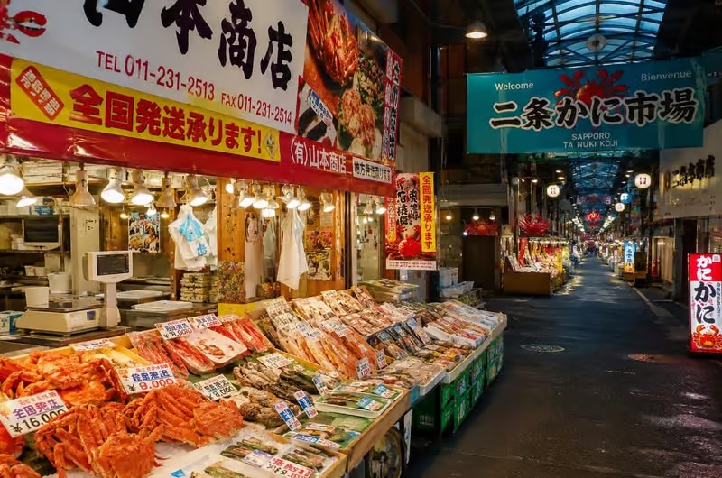

Рынок Нидзё
Крабы, лосось и икра на прилавках небольшого рынка у реки Сосэй: морская сторона Хоккайдо в центре города.
🇯🇵 Показать местному
北海道札幌市中央区南3条東1丁目〜東2丁目
Что этоРыбный рынок в центре Саппоро, рядом с рекой Сосэй.
ГлавноеЛавки с морепродуктами и небольшие рыбные столовые.
Не пропуститеВнутренние проходы за торговыми фасадами.
- Прилавки с крабами, лососем и икрой — в рыбных лавках вдоль улиц рынка.
- Внутренние торговые проходы — за входами со стороны реки Сосэй.
- Норэн-ёкотё — крытый проход с небольшими заведениями внутри рыночного квартала.
- Перед покупкой уточните, за штуку, порцию или вес указана цена.
- Для фотографий прилавка сначала спросите продавца; не перекрывайте покупателям проход.
- Если решите поесть на рынке, выбирайте открытое заведение по его меню: у лавок разные часы и выходные.
История и подробности
Нидзё устроен в масштабе нескольких городских улиц: продавцы стоят рядом с открытыми прилавками, за витринами видны крабы, рыба и баночки икры. Здесь полезно смотреть не только на самые крупные морепродукты. Упаковки сушёной и солёной рыбы, овощи, фрукты и небольшие столовые показывают, как рынок соединяет торговлю продуктами и готовую еду.
Происхождение рынка связывают с рыбаками с побережья Исикари, которые в начале эпохи Мэйдзи стали продавать здесь свежий улов. Это рассказ о постепенном появлении торговли, а не точная дата основания всех нынешних лавок. По мере роста Саппоро к рыбным рядам присоединялись другие продавцы и заведения. Сегодня рынок продолжает работать среди обычной городской застройки.
Фасады вдоль улицы — только часть рынка. Внутри квартала есть другие торговые помещения и Норэн-ёкотё: «ёкотё» называют небольшой переулок или проход с тесно стоящими заведениями, а «норэн» — тканевую занавесь перед входом. Часть заведений ориентирована на вечер, поэтому утренняя прогулка не означает, что открыта каждая дверь. Интерес места — в соседстве рыбной торговли, еды и повседневного движения города.